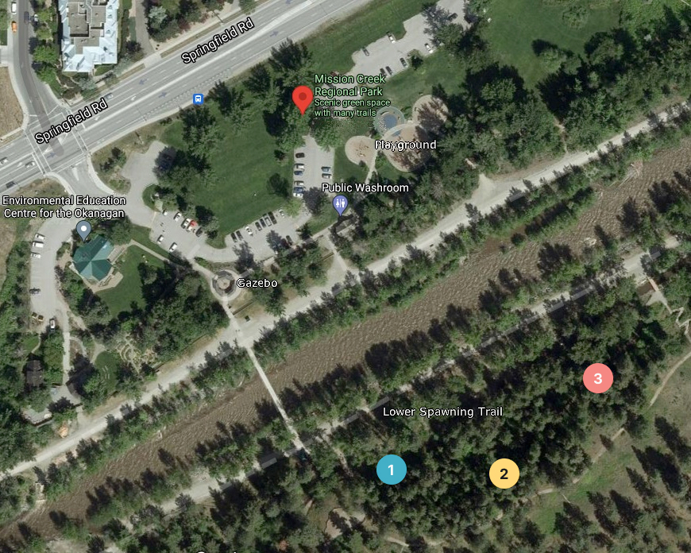

Hunt Outside
Instructions
Below is a map for this outdoor scavenger hunt that takes place at Mission Creek Regional Park (by Springfield Road and Leckie Road). Right now, the map has 3 puzzles for you to solve. Take a good look at the map and try to figure out where you need to go.
If you want GPS directions, you can click on the each of the puzzles to get a hint. There is a link to an interactive GPS map that will show you how far away you are from the hidden puzzle. GPS will only bring you so close. So once you are at the indicated GPS location, use the hint to figure out where the puzzle is hidden.
Once you think you are close, look for a little QR code hanging around. Once you find the hanging tag, scan the QR code on the back with the camera or an app on your phone, and it will lead you to the puzzle page. Go to the puzzle and complete the challenge!
When you've found all the QR codes and finished all of the puzzles, scroll to the bottom of the page and click "I'm all done!".
Good luck!
Map
This map is currently not clickable, but it might be in the future!
Hints
Colourful!
Cross the bridge to see the kokanee spawn,
Head towards the stairs for the turtle pond,
Stop and look around for a QR code,
Hidden beneath where the wind might blow.
Pathfinder!
Continue along the trail down low,
Walk pass the bench and see where you might go,
Soon there'll be rocks by a fallen tree,
And that's where this puzzle is gonna be!
Routes!
Take the stairs up to see trees of pine,
Walk back where you started to find a sign,
It's the way to say pine in Nsyilxcən,
Look across and carefully scan the region.